Claim: Ibn Masud Rejected the Muawathatayn
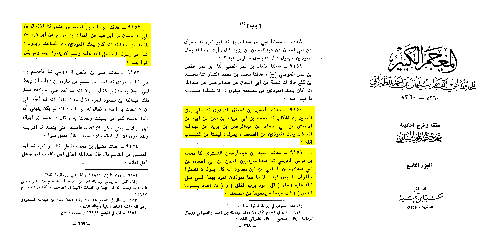
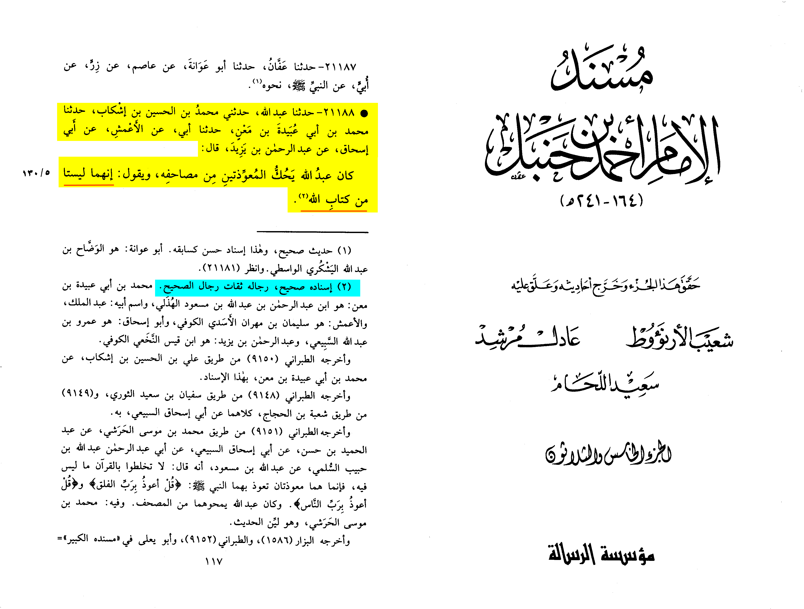
You wouldnt establish Tahreef upon Ibn Masud RA if he never received the clear cut proof that the
2 surahs (Al Falaq and Al Nas) are indeed revelation from Allah.
Say for example you have 2 companions, Sahabi X and Sahabi Y of the Prophet Muhammad SAW.
Both memorise the Quran from the Prophet everytime he receives revelation and they usually recite
to each other to test their memorisation or style of recitation.
Say this is in Medina and the Prophet intends to go to makkah, Sahabi X intends to go with the
Prophet Whilst Sahabi Y dosent.
Whilst the Prophet is there a short surah is revealed. Sahabi X memorises it.
Fast Forward a decade later.
The Prophet Muhammad SAW has passed away and there is no more revelation.
Both Sahabi X and Sahabi Y have their own codexs' of the Quran. Some people may realise that Sahabi Y
is missing a surah that Sahabi X and other Sahabis might have.
Would it now be just for people to establish Tahreef upon Sahabi Y?
Ofc not! Only an Intellectual bankrupt individual would.
Another thing we could add is
Lets even say that Sahabi Y along the way heard this short Surah from a random3 person and liked it.
He then proceeds to place it in his codex, but then over the years decided to erase as he only wanted
WHAT HE BELIEVED IS PART OF THE QURAN.
This news spreads throughout the muslims that Sahabi Y, a prominent reciter decided to remove a surah
from his Mushaf.
After these 2 scenarios is it just for one to establish Tahreef upon him? No.
Similar is the case with Ibn Masud RA, if indeed he didnt believe that Surah al Falaq and Al Nas was
from the Quran its because the Hujjah was never placed upon him.
But he did believe in them and he did recite them
Consider the following evidences ⤵️
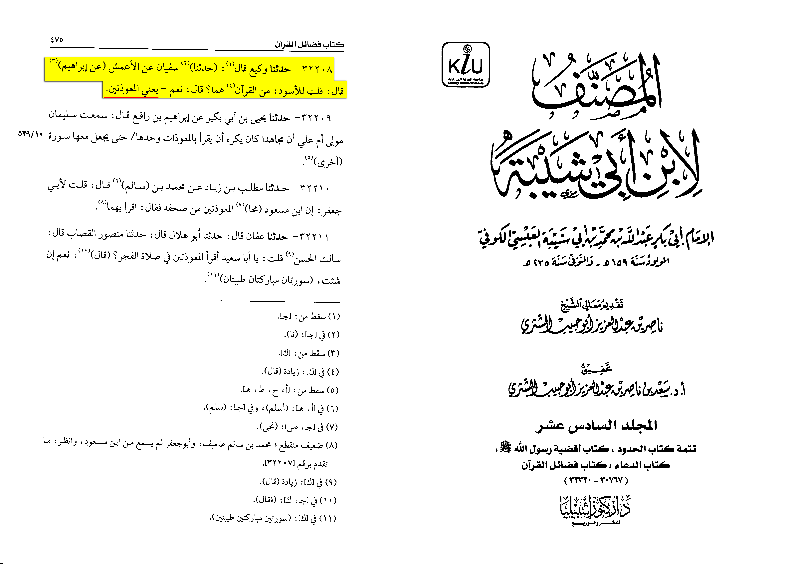
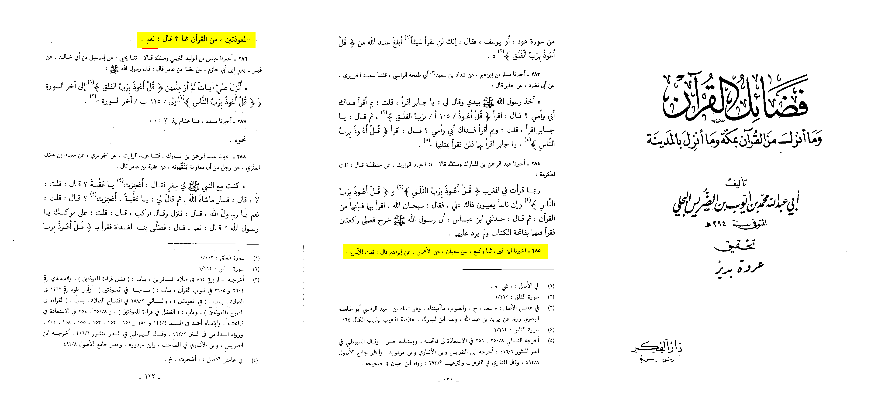
al-Aswad bin Yazeed a student of Ibn Masud who learned directly from the tongue of Ibn Masud
affirmed the Mu'awwidhatayn
Ibrahim al nakha'ee said: I said to al-Aswad bin yazeed, Are the Mu'awwidhatayn from the Quran,
he replied: Yes!
Al Aswad learning from Ibn Masud
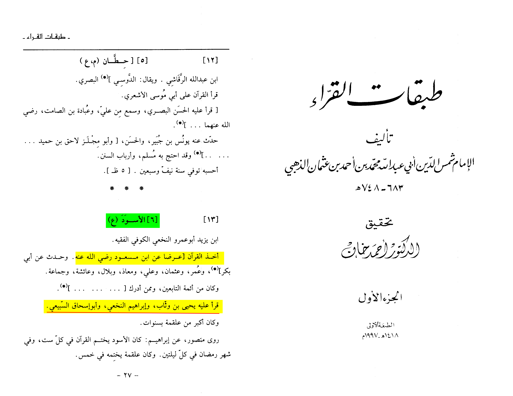
Al Aswad being from the biggest and greatest companions of Ibn Masud
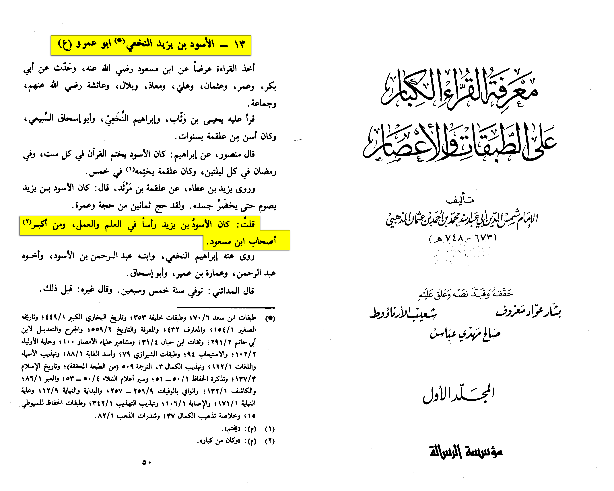
As well as Zirr Ibn Hubaysh being a companion of Ibn Masud and learning the Quran from him among other companions
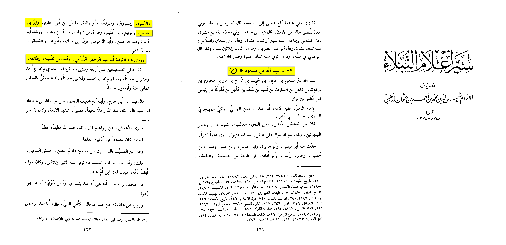
In Ghayat Al Nihaya Fee Tabaqat al Quraa
Under the Biography of Zirr Ibn Hubaysh
"He presented his recitation to Abdullah Ibn Masud, Ali Ibn Abi Talib and Uthman Ibn Affan May Allah be pleased with them.
Asim Ibn Abi Al Najud presented his recitation (among others) to Zirr
Asim said: "I didnt see anyone better in recitation than Zirr and Abdullah Ibn Masud used
to ask him questions about the Arabic Language"
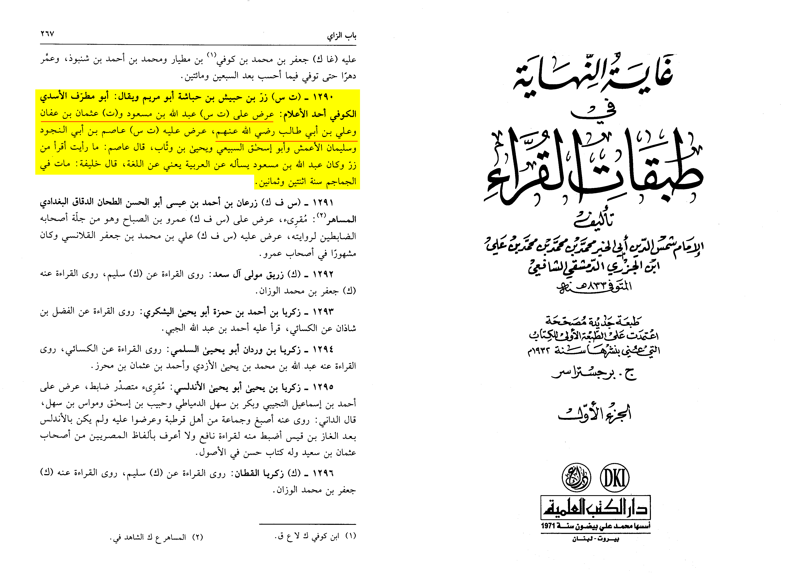
In Ghayat Al Nihaya Fee Tabaqat al Quraa
Under the Biography of Asim Ibn Abi Najud/Asim Ibn Bahdala
He took his recitation from 3 individuals Zirr Ibn Hubaysh, Abu Abdulrahman al Sulami and Abu Amru al Shaybani(as well as others not mentioned)
The Qiraat of Asim has 2 pathways.
1) Through Hafs Ibn Sulayman (90% of Muslims recite this riwayah)
2) Through Abu Bakr Shu'ba Ibn Ayyash
Shu'ba said: "Asim told me, no one recited a letter of the Quran to me except Abu Abdulrahman Al Sulami,
and I used to return to Zirr Ibn Hubaysh and I used to present my recitation to Zirr"
Hafs said: "Asim told me, the recitation that I recited upon was that of only Abu Abdulrahman al Sulami
from (which he got from Ali RA) and the recitation that I recited upon Shu'ba it is the recitation that
I used to present to Zirr Ibn Hubaysh (which he got from Ibn Masud)
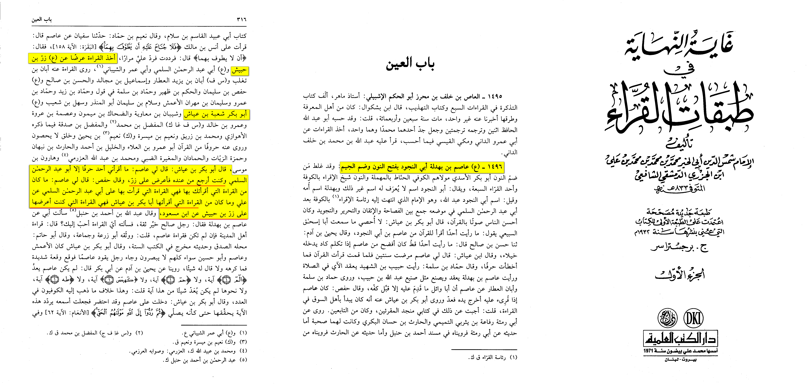
Now Zirr learned the Quran from Ibn Masud
Asim learned from him as well
The Qiraa of Asim includes Surah al Falaq and Al Nas.
Meaning its part of the Quran
Another pathway back to Ibn Masud is through the Qiraa of Hamza
RED LINES IS WHATS IMPORTANT
Hamza took his recitation from many people such as Humran Ibn A'yen
Hamza took his recitation from Humran Ibn A'yen and presented his recitation to many people
one of them being Al A'mash and Al A'mash used to recite the Huruf of Ibn Masud
And Humran Ibn A'yen used to recite the Qiraa of Ibn Masud.
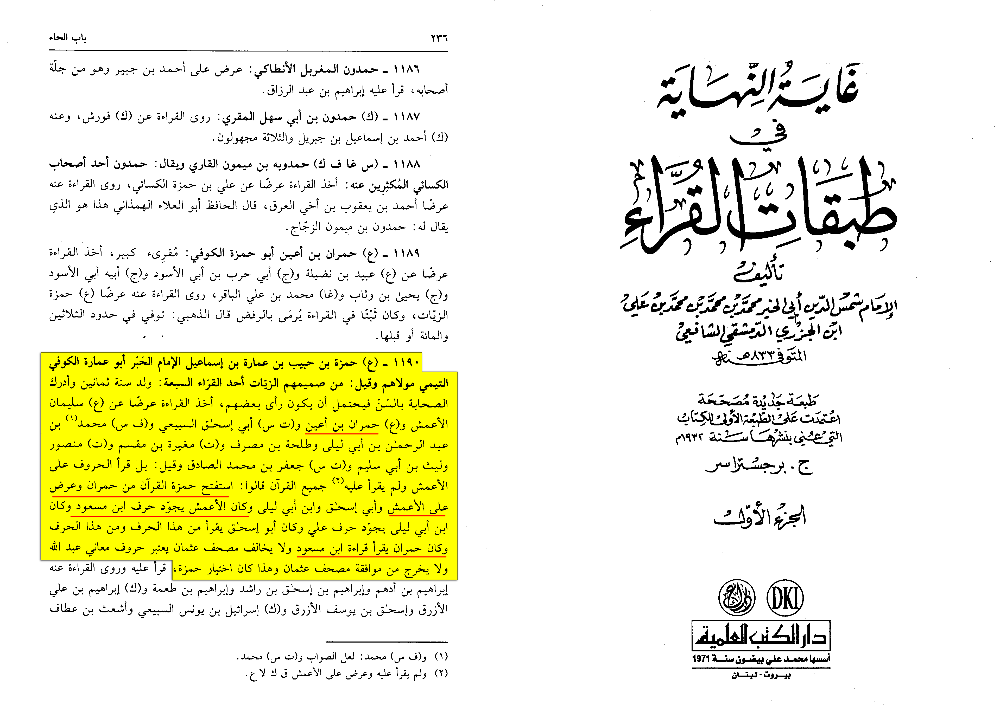
In Tabaqat al Qurra under the biography of Humran
"Harun Ibn Hatim reported from Al Kisaei that he said: 'I said to Hamza, who did u recite upon?
He (Hamza) said 'I recited on Ibn Abi Layla and Humran Ibn A'yen. I then asked who did Humran
recite upon? Hamza responded: On Ubayd Ibn Nadla"
There is Ikhtilaf on Ubayd Ibn Nadlas recitation, either it goes back to Ibn Masud directly as
in he learned he directly from him or he learned through his student Alqama. Either way it goes
back to Ibn Masud.
THE RECITATION INCLUDES SURAH AL FALAQ AND SURAH AL NAS.
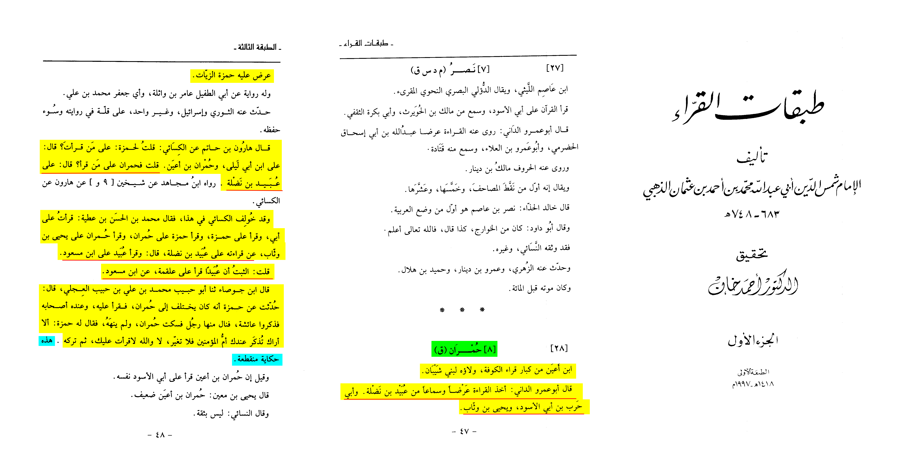
Al'Amash also recited upon Zirr Ibn Hubaysh which goes back to Ibn Masud and Hamza recited upon him.
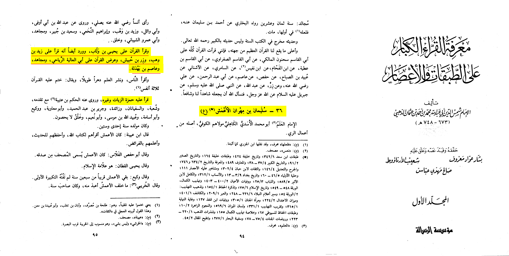
Another individual that goes back to Ibn Masud is Yahya Ibn Wathab which Humran learned from.
This is all within the recitation of Hamza
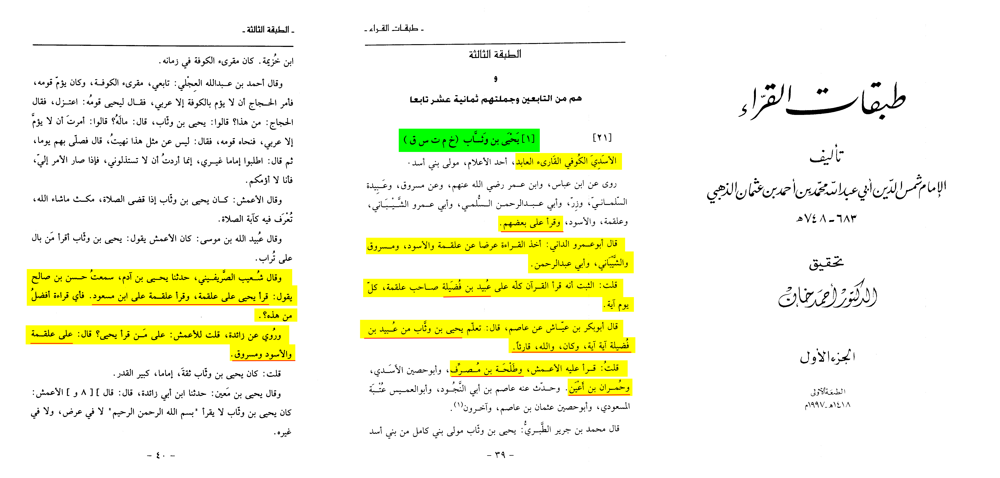
Ibrahim Al Nakhiaee (look at footnote #7)
said: "The companions of Ibn Masud that used to RECITE THE QURAN and give fatwas were: Alqama,
Al-Aswad, Masrooq, Al-Harith bin Qays, Amru Ibn Sharjeel, and Ubaydah Al-Sulami.
Note: Al-Aswad was the one who affirmed both Surah Al-Falaq, and Surah Al-Nas.
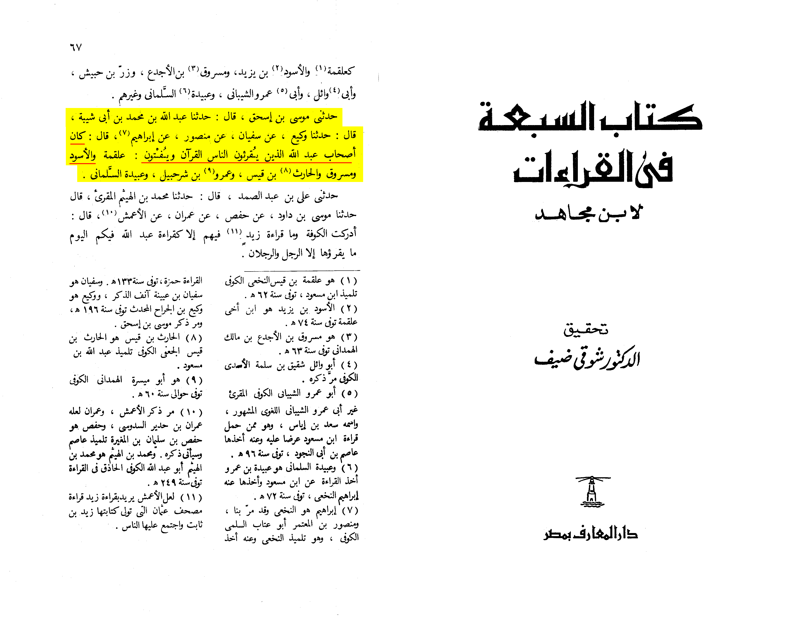
This is all i will do for the 2 recitations. Hamza and Asim.
This is sufficient enought to portray that the chains of the Qiraat is more then
enough to refute that Ibn Masud RA abandoned the recitation of surah al falaq and surah al nas.
The 4 recitations in Kufa
Asim, Al Kisaei, Hamza, Khalaf trace back to 2 main Sahabis
Ibn Masud and Ali Ibn Abi Talib
The Chains are too many to show.
Whats important to know is that the reciters and recitations in Kufa is a basically a
spider web that goes back to them. So its literally impossible for there to be a "missing ayah"
or "missing surah"
Even if we submit and agree that Ibn Masud did not believe in them it would not affect
the Mass Transmission of the Quran
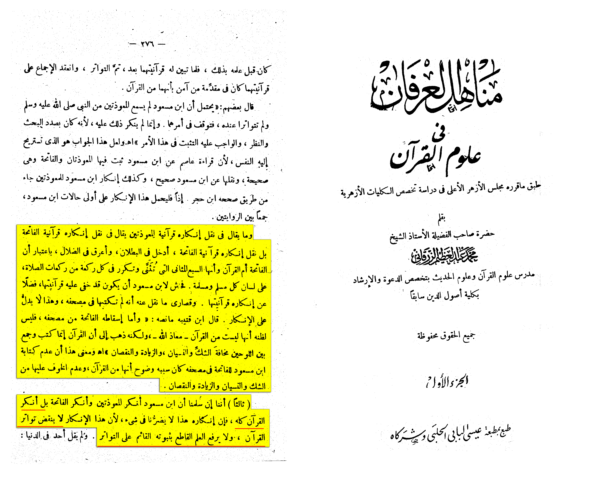
Sufyan ibn ʽUyaynah states: "He (Ibn Masud) used to see the Prophet Muhammad reciting (Falaq and Nas)
in a dua (manner) for Al Hassan and Al Hussein, and he never heard it from the Prophet recite it in his
Prayer, so he (Ibn Masud) assumed they were only supplications and insisted on his assumption.
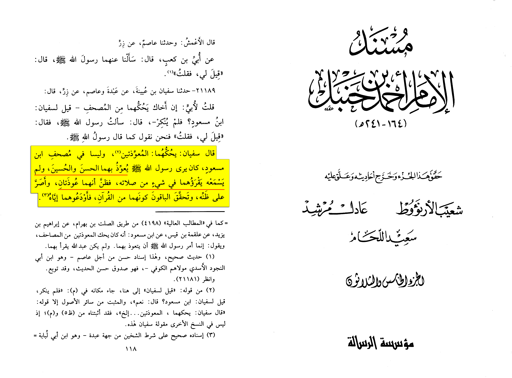
Ibn Masuds stance on the one who disbelieves in a letter of the Quran
"Whoever disbelieves in a letter of the Quran then he has disbelieved in all of it"
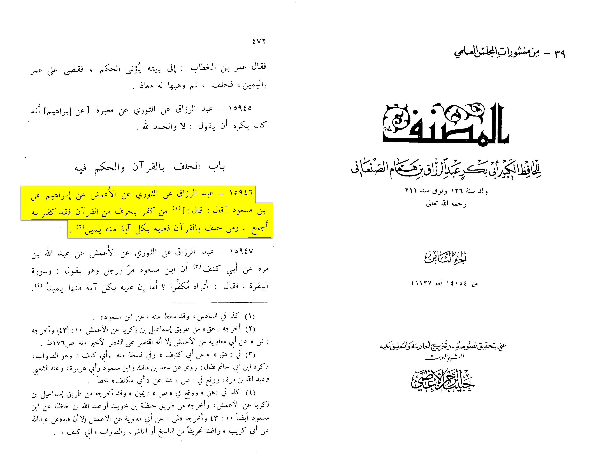
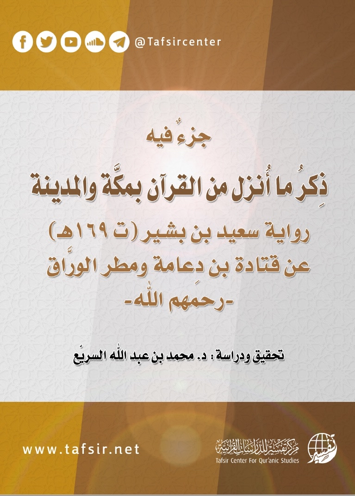
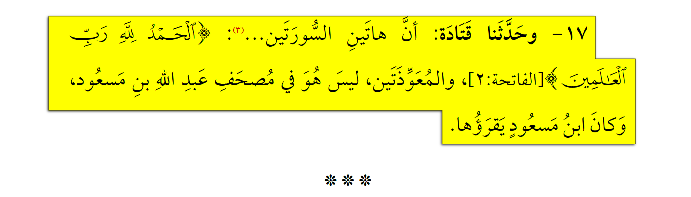
The Nail in the coffin
Earliest opinion. Earlier than Sufyan Ibn Uyayna
Qatada ibn Di'amah al-Sadusi says: "These two Surahs Al Fatiha and the Mu'awthatayn are
not in the codex of Ibn Masud, and Ibn Masud used to recite them!
This narration alone crumbles the narrative that Ibn Masud never recited them. He did!
He affirmed them!
Qatada ibn Di'amah is from the Tabieen.
If a Shia attacks you with this, tell them their own scholars don’t affirm Tahreef upon Ibn Mas’ūd.
Muhammad Hadi Ma'rifah whos a Scholar and a researcher in Quranic sciences states that Ibn Masuds
rejection of the Al-Mu'awwidhatayn was not a shift to Tahreef.
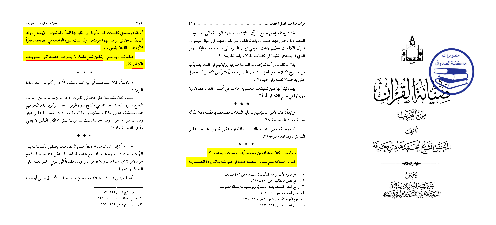
Al-Sayid Tahrani also does not establish Tahreef upon Ibn Masud.
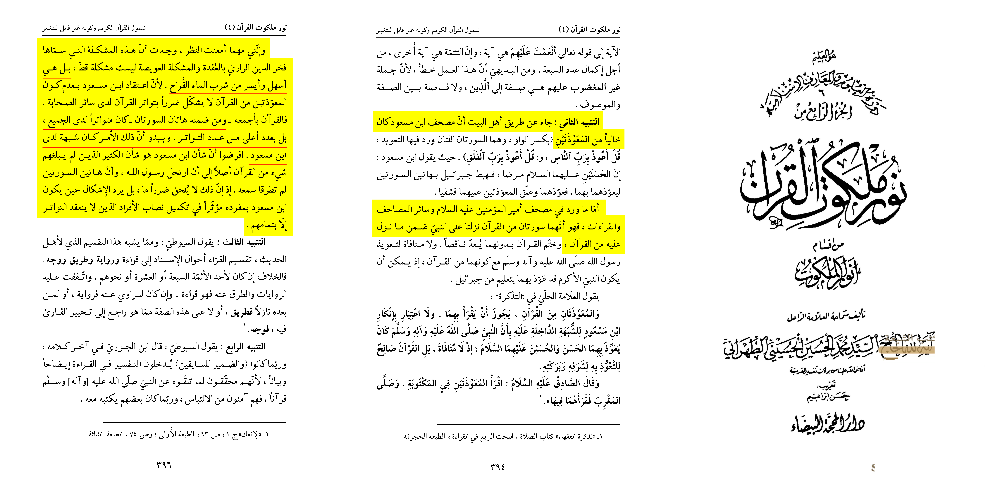
Ali bin Yunus Al-'Amali Al-Baydi also did not establish Tahreef upon Ibn Masud as he states
"He (Ibn Masud) did not reject the nuzul of the surahs"
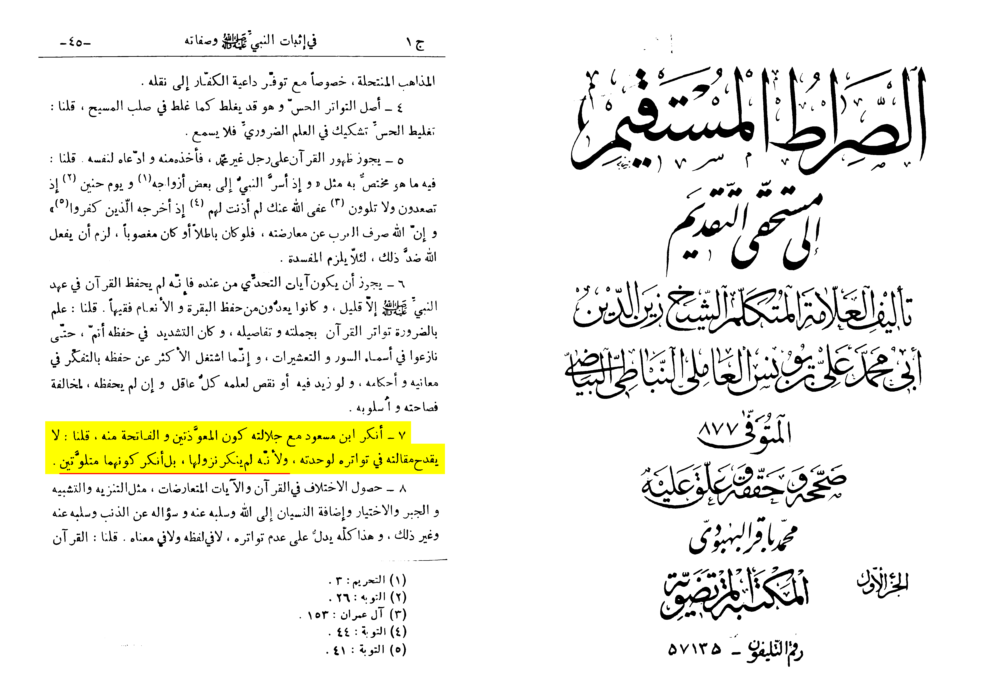
al-Tabtabaee does not affirm Tahreef on Ibn Mas’ūd.
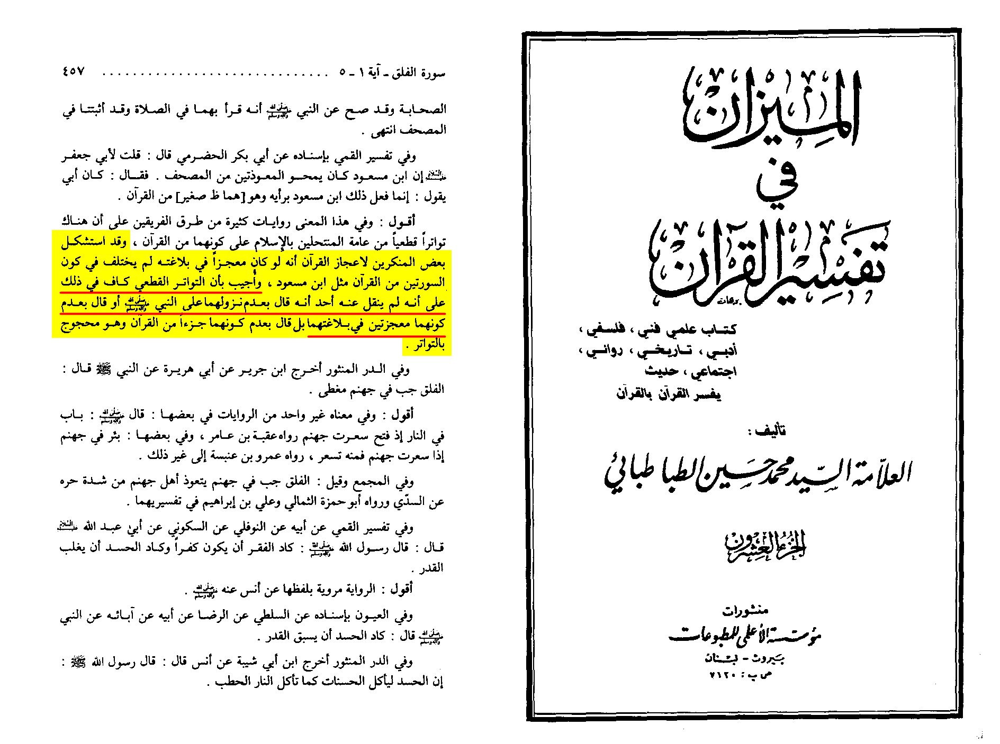
Al-Sayid din al-Razi also does not establish Tahreef upon Ibn Masud.
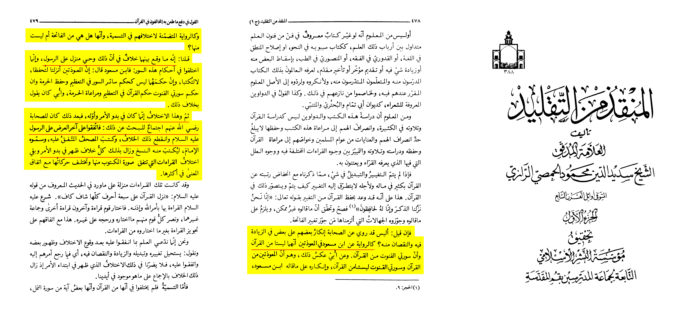
Ali Musa al-Ka'bi argues that Ibn Masud did not reject it all soley due to the chain of the Qirāʼāt
He argues it through Zirr Ibn Hubaysh who learned from Ibn Masud and taught Asim. He mentioned
how he heard the Mu'awwidhatayn from the Prophet and how he thought they were supplications
for Al-Hassan and Al-Hussein.
He then says
"Ibn masud took out the Mu'awwidhatayn from his mushaf because he speculated it wasn't from the Quran,
and when it was shown to him that it was Ijma (among the people) and Tawatur has been established
he became from the first and foremost to believe in them and taught it to Zirr Ibn Hubaysh and Asim
took it from Zirr"
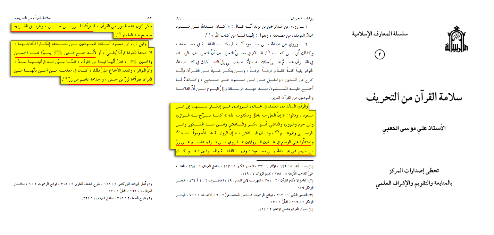
al-Sayid Jafar Murtada al-Amili says this was a Shubha to Ibn Mas’ūd, and his rejection dosent
amount to anything, as it’s his own personal Muṣḥaf. The Ummah agreed upon them.
He further states that Ibn Mas’ūd retracted his stance, and believed that they were from the Qur’ān
after it was pointed out to him.
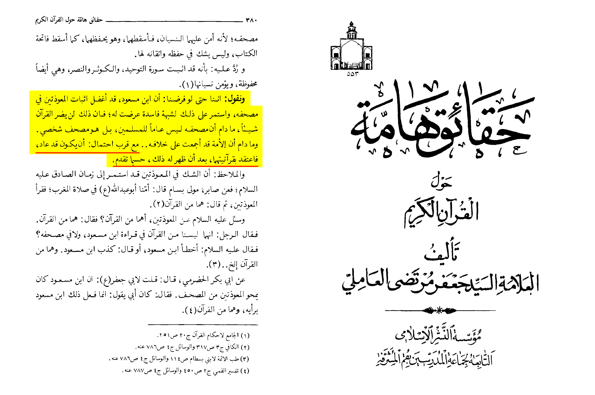
If you wanna cut it short against a Christian or Shia